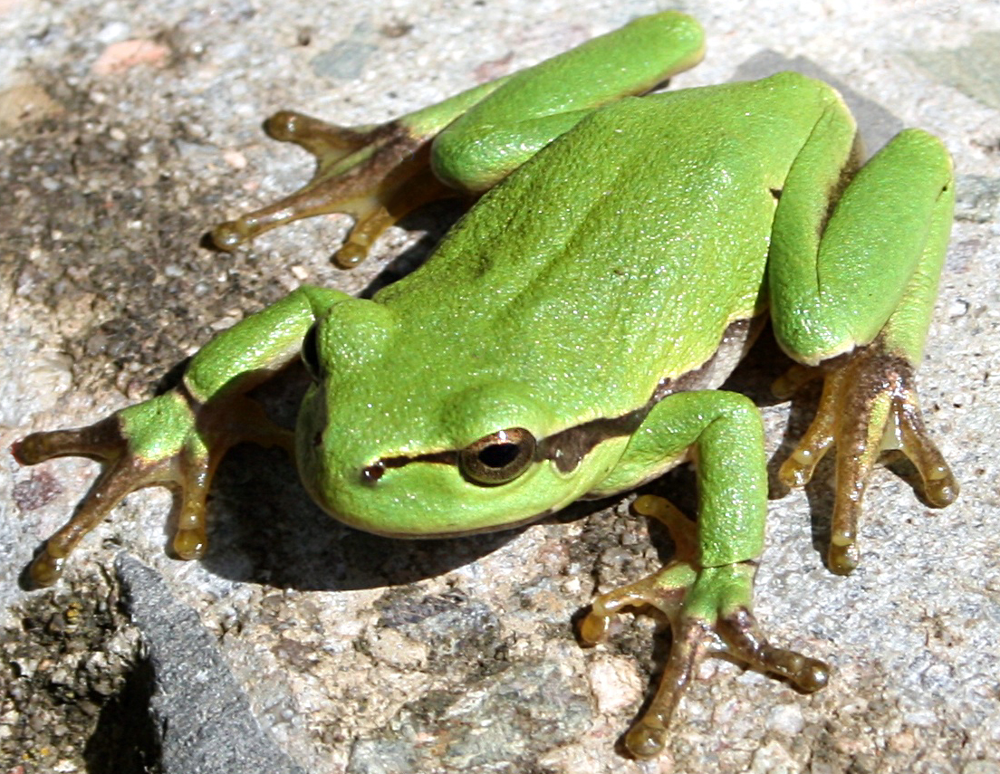

Обыкновенная квакша, или древесница — лягушка из рода квакш до 5 см длиной.
Квакша — небольшая лягушка с максимальной длиной тела 53 мм (в Европе до 60 мм).
Окраска очень изменчива, может меняться буквально на глазах.
Иногда им приходится преодолевать до 750 м, чтобы попасть в водоем. Самцы, приходящие первыми, концентрируются по краю водоема.
